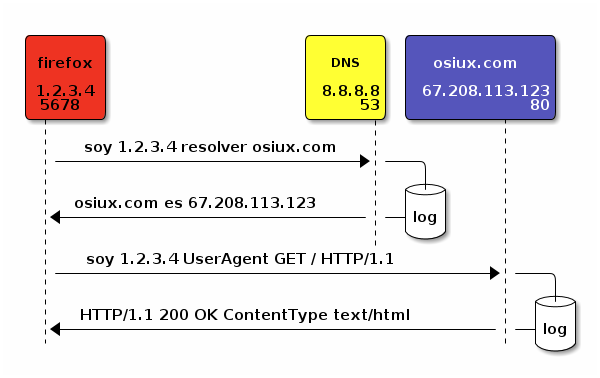
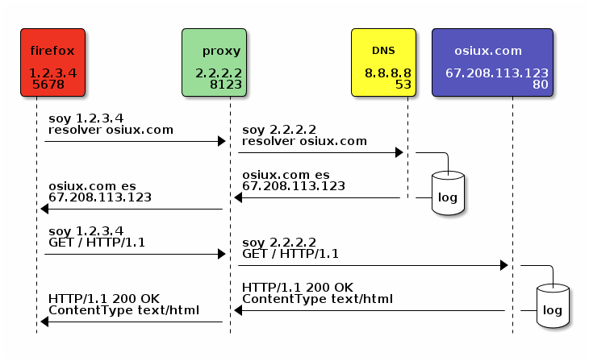

privacidad y anominato en la red
ABSOLUTELLY NO WARRANTY | CC-BY-SA | OSiUX | .git
Seguridad de la Información
- Integridad
- Disponibilidad
- Confidencialidad
Niveles de Seguridad
+--------------------------------+-----------------+ | Inicio Dispositivo | BIOS User/Admin | | Selección Sistema Operativo | GRUB/Bootloader | | Acceso al Sistema Operativo | root | | Acceso a los datos | LUKS | | Acceso a la sesión del usuario | osiris | | Acceso al canal seguro | ssh | | Recepción y Envío de Correos | imap/smtp | | Firmar/Cifrar correos | gpg | +--------------------------------+-----------------+
Cifrando el disco
cryptsetup luksFormat /dev/sdb3 cryptsetup luksOpen /dev/sdb3 misdatos mount /dev/mapper/soloparami /home/osiris
Privacidad y Anonimato
- ocultar el contenido del mensaje
- ocultar origen y remitente
Herramientas
- gpg
- polipo
- socat
- ssh
- ssl
- tor
Distribuciones
- Liberte Linux
- Mandragora
- Polippix
- Privatix Live System
- TAILS, The Amnesic Incognito Live System
- Ubuntu Privacy Remix
plugins firefox
+-------------------+-------------------------------+ | AdblockPlus | bloquea publicidad | | AutoProxy | permite usar muchos proxies | | Flashblock | bloquea flash | | Ghostery | bloquea scripts/trackers | | HTTPS Every Where | fuerza HTTPS en lugar de HTTP | | NoScript | bloquea scripts/trackers | | ShowIP | muestra IP servidor | | ShowMyIP | muestra IP local | +-------------------+-------------------------------+
HTTP vs HTTPS
- en HTTP los datos viajan en claro
- en HTTPS los datos viajan cifrados
Buscar sin dejar rastros?
- scroogle.com
- lxquick.com/StargPage.com
ManInTheMiddle | HombreEnElMedio
iptables -t nat -A PREROUTING -i eth0 -p tcp --dport 443 -j REDIRECT --to-port 4443 socat -v OPENSSL-LISTEN:4443,reuseaddr, verify=0,cert=server.crt,key=server.key, cafile=ca.crt,debug, fork OPENSSL:gmail.com:443
navegar sin proxy

SSH Proxy SOCKS
- muy fácil de implementar!
ssh -D 9090 osiris@osiux.com
- multiplataforma OpenSSH/PUTTY
- cifrado
navegar con proxy

firefox DNS
- hacer consulta DNS desde el proxy
about:config network.proxy.socks_remote_dns = true
tunnel SSH
ssh -L 8080:osiux.com:80 osiris@osiux.com
^ ^ ^ ^ ^
| | | | |
| | | | servidor
| | | |
| destino | usuario
| |
puerto local puerto destino
siempre localhost
- aplicaciones apuntan a
localhost:puerto - si el
tunnel sshno está levantado, no hay canal seguro
~/.ssh/config
Host osiux.com
User osiris
HostName 67.208.113.123
LocalForward 2525 localhost:25
LocalForward 9930 localhost:993
LocalForward 8123 localhost:8123
LocalForward 6667 irc.freenode.net:6667
LocalForward 5223 talk.google.com:5223
LocalForward 5222 talk.google.com:5222
LocalForward 1863 messenger.hotmail.com:1863
compartir es bueno
usted es libre de:
- compartir, copiar, distribuir, ejecutar
- comunicar públicamente la obra
- hacer obras derivadas
- hacer un uso comercial de esta obra